Autumn Foliage
Description
This section is from the book "Tree Planting Streets And Highways", by William F. Fox. Also available from Amazon: Tree planting on streets and highways.
Autumn Foliage
In the selection of species for street and highway planting some consideration should be given to the colors which the leaves will display in the fall months, a matter as important as that of tree habit or graceful outline. Although a purely esthetic one its importance has been urged at times by scientists as well as writers on woodland scenery. We hail with pleasure the green foliage of each returning spring, but delight none the less in the brilliant display made by the painted leaves in autumn, and, so, when we come to choose our trees for planting, everything else being equal, why not give a preference to the species which afford a pleasing aspect in both spring and fall.
In considering this question it is well to remember that, while certain species generally show the same color each tall, there is apt to be some variation in thus respect. Occasionally some individual will exhibit an entirely different tint from the prevailing one of that species, while frequently several tints, and at times two or more distinct colors, wall be found on the same tree. Idle Real Maple is noted for the scarlet hue of its leaves in early fall; but here and there a tree of this species will display a yellow foliage at that season. Then, again, the other Soft Maple, the White or Silver Maple, which generally turns yellow, will in some places present a single tree with leaves showing a red color to considerable extent.
Most of our Oaks are a brilliant red or scarlet in October, but some of them change each autumn from green to russet without the usual intermediate bright tints that generally precede the russet. The Hard, or Sugar Maple, cannot be classified under any one particular color, tor it not only displays various ones on the same tree, but green, yellow, and red are often found on the same leaf. The leaves Oil some species, the White Ash for instance, show three or four successive tints during their transition, passing from yellow to a beautiful shade of brown, On some trees, noticeably the Red Maple, a single branch will assume a brilliant color, generally red in August, while the rest of the foliage is still green, This may be attributed to some lack of vitality in the particular branch thus affected.
It has been observed that when a tree shows a distinctive sport of this kind the peculiarity is a persistent one, and its recurrence may be looked tor each year. If a Real Maple displays one highly colored branch in early August, while all the rest of its foliage is green, it may be depended upon to exhibit the same phenomenon next season. The White Maple, as a rule, has yellow leaves in autumn ; but it some one tree of this species shows a mixture of red and yellow in its leaves it will surely do the same through each successive year On some Oaks the leaves, instead of turning red, change from green to yellow or russet ; but, whatever the peculiarity in tin's respect, each individual will retain it in .1 marked degree year after year. The persistency of this abnormal variation in color has been observed so often that the reasonable suggestion is made that horticulturists and nurserymen might be able, by using cuttings or grafts from trees or branches that exhibit a constant color, to propagate trees of desirable autumn tints and furnish stock- to their customers, warranted to display certain attractive features in this respect. The Purple- or Copper Beech, used so extensively in lawn planting, was propagated in this way from a single tree, which showed an abnormal color in its foliage.*
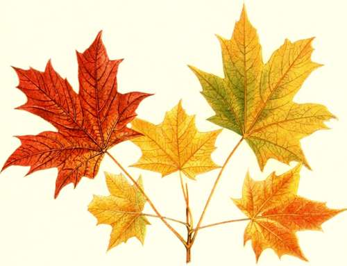Hard Maple
1/2 natural size
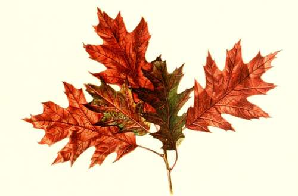Red Oak
1/3 natural size
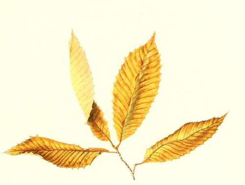Chestnut
1/2 natural size
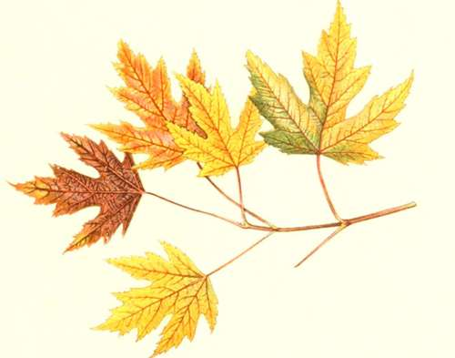White Maple
1/2 natural size
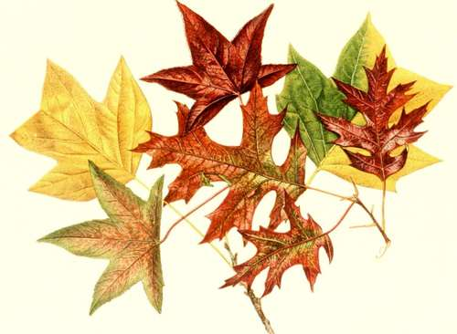Tulip Tree Sweet Gum Scarlet Oak
1/2 natural size
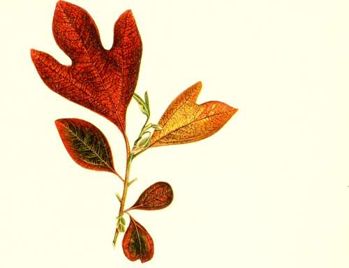Sassafras
1/2 natural size
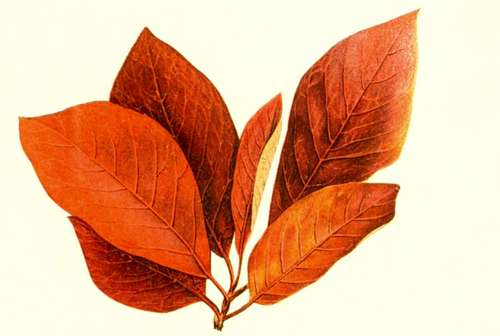Pepperidge
2/3 natural size
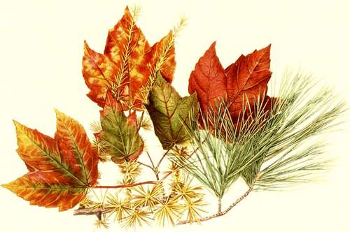Red Maple. Tamarack White. Pine
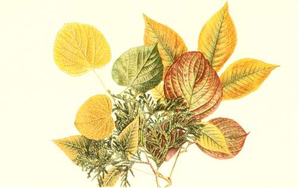Basswood. White Cedar. Flowering Dogwood 1/2 Natural Size. Shagbark Hickory 1/4 Natural Size
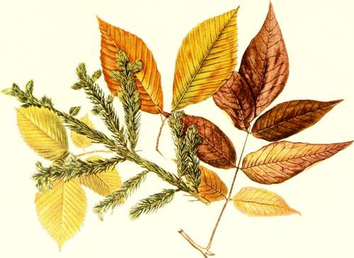White Elm Red Spruce. Beech. White Ash
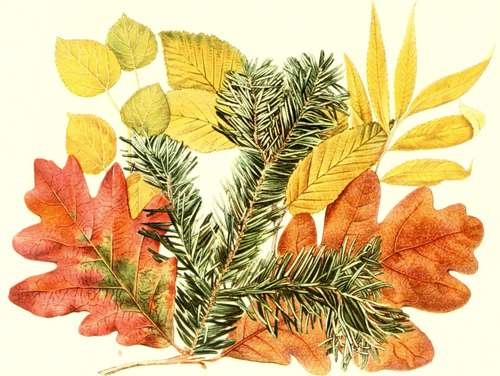Aspen. White Oak. Balsam Fir. Yellow Birch. White Willow
There seems to be a popular impression that the period in which our forests display their autumnal beauty is of brief duration. A little thought and observation will show that this is hardly the case. By the first of August, throughout New England and the Middle States, many of our soft maples display their scarlet standards of approaching fall; in September the forests on our mountain slopes and upland plateaus are at their best; in October the woodlands along our valleys, and the trees that line our village streets, present their most brilliant effects; and even in November the persistent russet leaves of the oaks are still in pleasing evidence, while here and there on some late maturing trees may be seen a faint glow befitting this twilight season of the year. Thus we have tour months in which to study this pleasing exhibition of Nature, a period nearly as long as that in which the vernal foliage retains its uniformity of green. It would seem, however, that the annual recurrence of this lavish display is not appreciated .is it should be, that little attention is paid to id aside from the few who delight in Nature study. Thoreau very justly remarks that " It such a phenomenon occurred but once it would be handed down by tradition to posterity, and get into the mythology at last."
Like the procession of the seasons the various tree species assume their autumn garb in a regular order. In some localities it may be early or late; but, then, our spring or fall does not always arrive in accordance with the almanac. Here and there individual trees may be slow in donning their gay livery ; and there are spots where winter lingers, though all around the land is warm with returning spring.
To give the exact order in which the trees turn color would require too many exceptions and explanations. As the maturing of the foliage occupies a period of about three months the species may be divided into three groups showing their order in this respect, although no group can be assigned with accuracy to any one month. Their succession is approximately as follows:
* " Most of the purple beeches now in cultivation are probably derived from a tree of this variety, discovered in the last century in tin- Hanltriter Forest. near Somlershausen, in Thuringia, which is supposed to be about two hundred years old, and is still alive." (Prof. Charles S. Sargent, Silva 1 of North America, Vol. IX, p. 24.) see, also, '• The Origin of the Purple Beech." Garden and Forest, VII, 2.
Group One - The Earliest
Red Maples, White Elm, Sumach., Yellow Locust. Sour Gum, Horse Chestnut, White Maple. Yellow Birch, Hickories, Tulip Tree, Sassafras, Butternut, Black Walnut, Cucumber Tree, Kentucky Coffee Tree.
Group Two - The Intermediate
Hard or Sugar Maple, Sweet Gum, Chestnut, Yellow Wood, Red Oak, Pin Oak, Beech, White Birch, Black Birch, Aspens, White Ash, Hop Hornbeam, Blue Beech, Carolina Poplar, Basswood, Black Ash.
Group Three - The Latest
Scarlet Oak, Dogwood, Honey Locust, Lombardy Poplar, White Oak, Larch, Black Cherry, Sycamore, Sycamore Maple, Norway Maple, Ailanthus, Dutch Linden, Ginkgo, Willows, English Elm.
It would, undoubtedly, be interesting to state here the month and, approximately, the day of the month on which each species might be expected to display its ripened hues. This might not be so very difficult as regards any particular locality; for continued observations of individual trees show that they vary but a few days each year, both in the vernal unfolding and the autumnal ripening of the leaves. But, as the time of the process varies greatly with latitude and situation, no one schedule of dates would fulfill the purpose; and so each student must Construct his almanac in accordance with the dates noted in his own vicinity. If a person who keeps a diary faithfully will note in spring the first day on which each species may be said to be in leaf, and in fall when these same trees have fairly changed color, such memoranda will prove valuable for future reference. For many years the writer has thus timed the late and early springs by a clock of the seasons constructed from just such notes.*
Although, as previously shown, some species may exhibit two or more colors, there are certain prevailing tints which may be looked for in connection with each.
*" The illustrious Linnaeus, in the most earnest manner, exhorted Ins countrymen to observe with all care and diligence at what time each tree expands Us buds and unfolds its leaves; imagining, and not without reason, that bis country would, some time or other, reap some new and perhaps unexpected benefit from observations of this kind made in different places." [Harold Barck. Foliation of Trees. Amaen. Acad. Vol. III
Observers may differ some as to the shades noted, and it must be conceded that no classification can be made that will be absolutely comprehensive and correct. The following schedule is submitted as tentative rather than final :
Continue to: